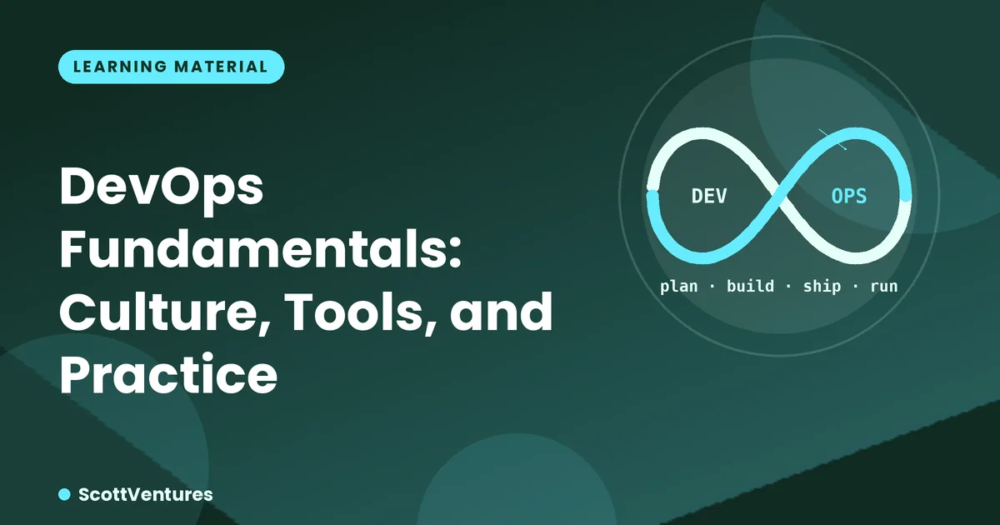

Before DevOps, "development" and "operations" were often separate teams with conflicting incentives: developers wanted to ship features fast, operations wanted stability and were the ones paged at 3am when a rushed release broke something. DevOps is the set of practices that removes that wall, making the people who build something also responsible for running it well.
# A Terraform snippet describing a server
resource "aws_instance" "web" {
ami = "ami-0abcd1234"
instance_type = "t3.micro"
tags = { Name = "web-server" }
}This file, checked into version control, fully describes a server. Need a second identical server? Change one number and re-apply. Need to know exactly what infrastructure exists? Read the file — it's not scattered across memory and dashboard clicks that nobody documented.
Monitoring answers questions you already thought to ask ("is CPU usage above 80%?"). Observability is about being able to ask new questions after something goes wrong, using logs, metrics, and traces you collected in advance — without needing to reproduce the problem to investigate it.
Whether a team uses Jenkins, GitHub Actions, or GitLab CI matters far less than whether deployment is a one-click (or fully automatic) process versus a manual checklist someone follows by hand. Manual processes are where mistakes and inconsistency creep in — automation isn't about speed alone, it's about making the process repeatable and boring, which is exactly what you want from a deployment.
When something does break — and eventually it will — mature DevOps teams run a blameless postmortem: focused on what in the system or process allowed the failure, not on which person to blame. This is a cultural practice, not a tool, and it's often what separates teams that keep making the same mistake from teams that genuinely improve over time.
Comments